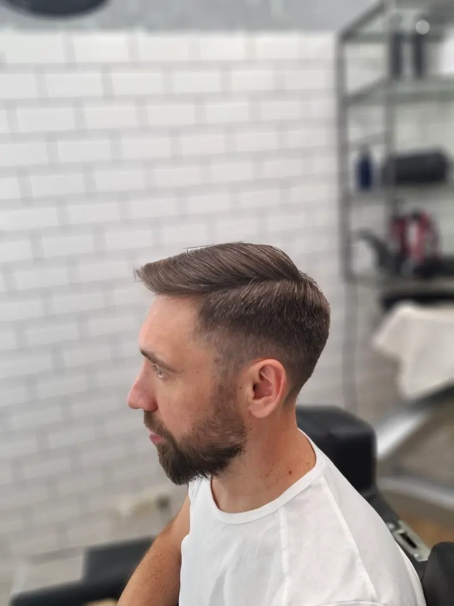

Журнал
Обложка мужского журнала: портрет, огромное имя с засечками, много воздуха.
светлый · антиква · ведёт фото · спокойный
турецкий барберМосква
Tamer Örcü
Найти мастера, которому хватает двух слов. За креслом я с 12 лет.черновик
- 30+
- лет в профессии
- 18
- лет работаю в России
- 12
- лет мне было на старте
3 локации в Москве: метро [TODO]
манифест
Строка Тамера [TODO]
ниже мелко встанет русский перевод · фраза из его Telegram, ждёт согласия
Hizmetler · услуги
С чем вы выйдете из кресла

- 01
Мужская стрижка
Носить форму, подобранную под лицо, волос и образ жизни
— мин— ₽Записаться - 02
Fade: ножницы и машинка
Показать чистый переход с любого ракурса
— мин— ₽Записаться - 03
Борода
Собрать лицо одной линией бороды
— мин— ₽Записаться - 04
Турецкое бритьё
Дать лицу отдых под пеной и опасной бритвой
— мин— ₽Записаться - 05
Камуфляж седины
Приглушить седину и остаться собой
— мин— ₽Записаться
Список услуг собран из резюме и ждёт подтверждения. Цена и длительность появятся из facts.md.